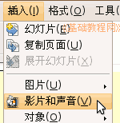
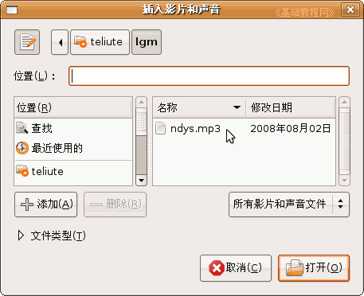
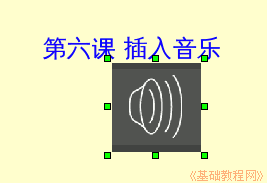
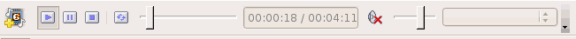

， 插入一个水平文本框，输入一段文字“第六课 插入音乐”，设置好文字格式和背景色；
， 插入一个水平文本框，输入一段文字“第六课 插入音乐”，设置好文字格式和背景色；OpenOffice.org 教程之 Impress 演示文稿
作者：TeliuTe 来源：基础教程网
六、插入音乐和视频 返回目录 下一课动听的音乐往往能带来美的感受，我们也可以在幻灯片中插入一首音乐，下面我们来看一个练习；
1、输入文字
1）启动Impress，点“创建”按钮，新建一个空白文档；
2）点下边“绘图”栏的“文字”按钮， 插入一个水平文本框，输入一段文字“第六课 插入音乐”，设置好文字格式和背景色；
3）以“插入音乐”为文件名保存文件到自己的文件夹；
2、插入音乐
1）点菜单“插入－影片和声音”，出来一个对话框；

2）在左边的“位置”中找到存放音乐的文件夹，音乐要提前放到自己的文件夹中，跟幻灯片文件放一起；

3）点“打开”，幻灯片中央出现一个小喇叭图标，这就是插入的音乐文件的标志；

把小喇叭拖动到合适的位置，保存一下文件；
3、插入视频
1）插入视频的方法跟插音乐的方法相同，只是在选择文件时，选择视频文件，插入后在左下角有个播放器，可以点击播放一下；

2）视频当中既有图像也有声音，效果比较好，缺点是占空间较多，另外视频文件也需要提前复制过来，跟幻灯片文件放在一起；
3）插入视频后拖动绿色小方框控制手柄，改变图像大小；
本节学习了Impress中插入音乐和视频的基本操作，如果你成功地完成了练习，请继续学习下一课内容；
本教程由86团学校TeliuTe制作|著作权所有
基础教程网：http://teliute.org
美丽的校园……
转载和引用本站内容，请保留版权信息和本站链接。